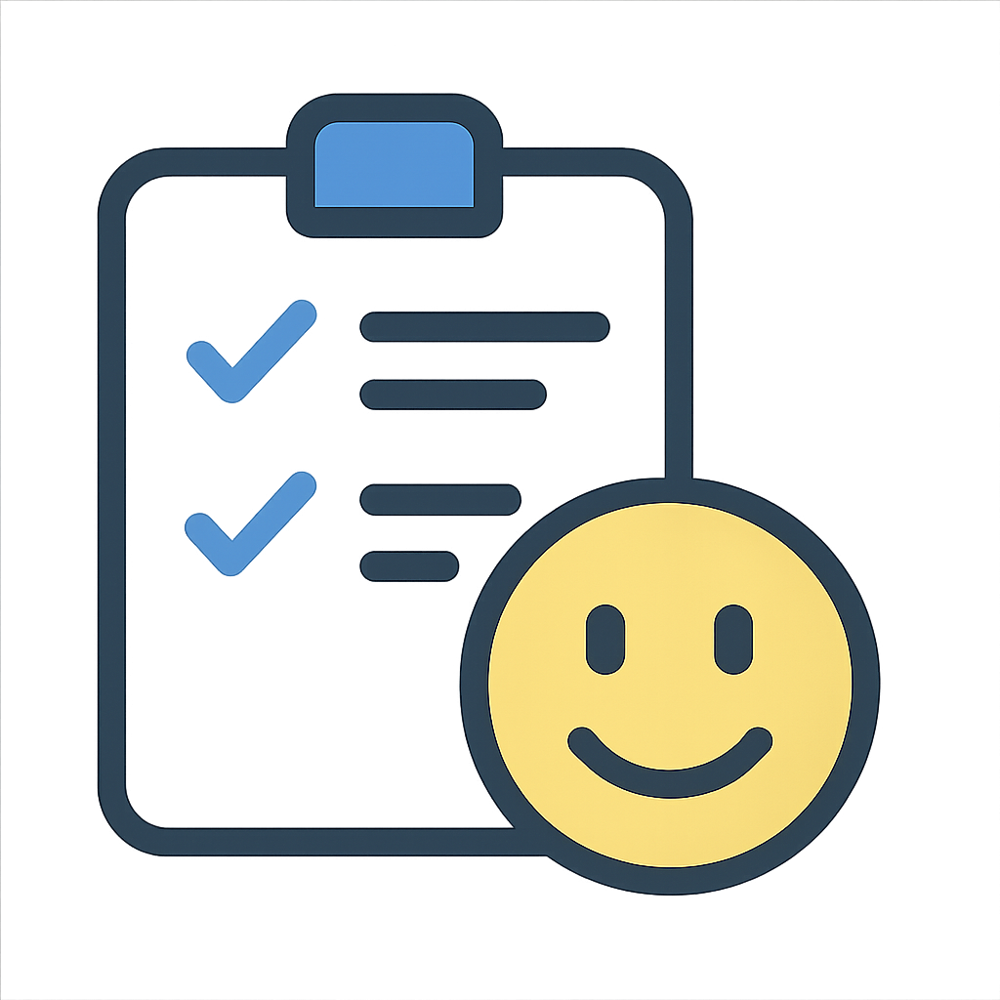

¿Qué es HabitoMania?
Es una herramienta pensada para ayudarte a crear, mantener y hacer seguimiento de tus habitos diarios de forma sencilla y visual.
A medida que avances en tu dia, vas marcando los habitos que cumplies, lo que te motiva a ser constante y alcanzar tur objetivos personales.
¿Por qué hacer seguimiento de hábitos?
Crear hábitos positivos nos ayuda a mejorar nuestra calidad de vida. Al hacer seguimiento diario, somos más conscientes y constantes.
- Mejoraras tu productividad
- Logras objetivos personales
- Reducis el estres